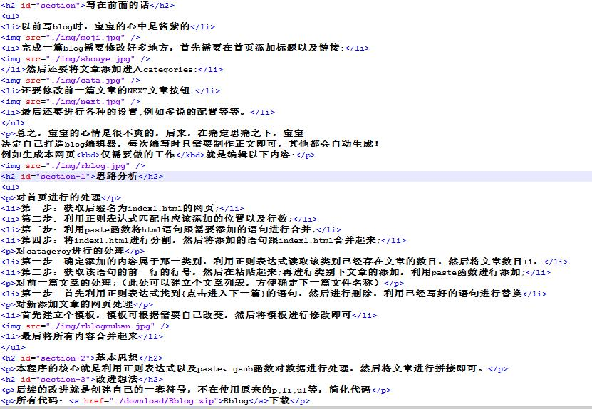

写在前面的话
- 以前写blog时，宝宝的心中是酱紫的
- 完成一篇blog需要修改好多地方，首先需要在首页添加标题以及链接:
- 然后还要将文章添加进入categories:
- 还要修改前一篇文章的NEXT文章按钮:
- 最后还要进行各种的设置,例如多说的配置等等。
总之，宝宝的心情是很不爽的，后来，在痛定思痛之下，宝宝 决定自己打造blog编辑器，每次编写时只需要制作正文即可，其他都会自动生成！ 例如生成本网页仅需要做的工作就是编辑以下内容:
这样就会简化大部分的工作，就像发布微博一样发布博客
思路分析
- 第一步：获取后缀名为index1.html的网页;
- 第二步：利用正则表达式匹配出应该添加的位置以及行数;
- 第三步：利用paste函数将html语句跟需要添加的语句进行合并;
- 第四步：将index1.html进行分割，然后将添加的语句跟index1.html合并起来;
- 第一步：确定添加的内容属于那一类别，利用正则表达式读取该类别已经存在文章的数目，然后将文章数目+1，
- 第二步：获取该语句的前一行的行号，然后在粘贴起来;再进行类别下文章的添加，利用paste函数进行添加;
- 第一步：首先利用正则表达式找到{点击进入下一篇}的语句，然后进行删除，利用已经写好的语句进行替换
- 首先建立个模板，模板可根据需要自己改变，然后将模板进行修改即可，这是我的模板
- 最后将所有内容合并起来就可以生成一篇博文了。
对首页进行的处理
对catageroy进行的处理
对前一篇文章的处理;（此处可以建立个文章列表，方便确定下一篇文件名称）
对新添加文章的网页处理
基本思想
本程序的核心就是利用正则表达式以及paste、gsub函数对数据进行处理，然后将文章进行拼接即可。
改进想法
后续的改进就是创建自己的一套符号，不在使用原来的p,li,ul等，简化代码，然后添加自动生成目录的方法，基本思想还是利用正则表达式。
所有代码：Rblog下载
MENBIN 地点：中国--大连--东财